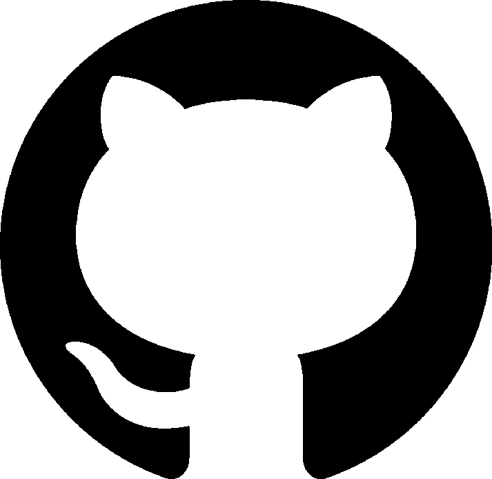

Curriculum Vitae
Petit--Frulio Titouan
Études
Élève de seconde au
lycée I. et F. Joliot Curie
LV2 : Allemand
Option : B.I.A.
Stage de troisième au service SIG et aplication interne de la comunauté d'aglomération
Options au collège :
Théatre
Latin
Loisirs
Programmation
Lecture
Jeux de logique
Vélo
Violoncelle
Activités extra-scolaires
Participation au Conseil Municipal des jeunes depuis septembre 2021
Apprentissage du violoncelle au Conservatoire à Rayonnement Intercommunal de Sète depuis 2020
Compétences
Informatique
Utilisation quotidienne de Linux (Kubuntu) et de windows 11
Maîtrise des commandes de base
Bonne maîtrise de Windows
Programmation :
Bonne maitrise des langages :
Python
HTML
CSS
Micro:bit
PHP
Maitrise moyenne des langages :
Django
Javascript
Arduino
Maitrise fragiles des langages :
Java
sh
bat
C#
C
Au 18 septembre 2024, 707 point PIX, et 580 à la certification
ASSR2

Coordonnées
Mail :
titouan.petit-frulio@laposte.net
Téléphone :
+33 7 69 80 99 65